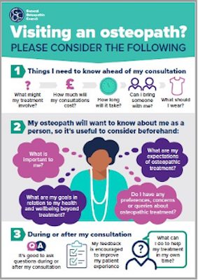

What is Osteopathy?
Osteopathy is a manual therapy for the relief of symptoms relating to the musculoskeletal system (bones, joints, muscles, ligaments & tendons). These include:
- Back & neck pain (e.g lumbar pain, upper back pain).
- Shoulder pain (e.g. rotator cuff problems, frozen shoulder).
- Elbow, hand & wrist pain.
- Hip & knee pain.
- Foot & ankle pain (e.g. plantar fasciitis).
- Certain types of headaches.
- Muscle & tendon strains (e.g. tennis elbow).
- Ligament sprains.
- Joint pain, such as the pain of osteoarthritis (or age-related changes as we call them these days).
- Nerve pain (e.g. sciatica or pain relating to the sciatic nerve).
There is also some limited & anecdotal evidence that it may help relieve symptoms of some other problems such as irritable bowel syndrome (IBS), gastro-oesophageal reflux (GOR) & asthma.
In the UK, osteopathy is one of 14 Allied Health Professions (AHP) designated by the NHS. It is regulated by its own statutory body, the General Osteopathic Council (GOsC), with which all osteopaths must be registered.
Being a manual therapy means that, after discussing your issue with you, I primarily use my hands to physically examine you; I might also need to use some medical kit (e.g. thermometer, stethoscope etc.) that your GP might, or watch you do some simple movements during this process. This leads to an assessment (or diagnosis) of your problem in the context of your experience.
If I think your problem is appropriate for osteopathic treatment, I then use my hands to deliver treatment. I use a range of osteopathic techniques that are appropriate to your age & problem – these may include passive joint mobilisation, joint manipulation (called high velocity thrust or HVT), muscle energy techniques (MET), massage (very occasionally) & a gentler form of osteopathic manipulation from the USA called Still Technique.
Wider management might include reassurance, referral to another health care professionals (if needed), advice & simple exercises.
On average, a course of osteopathic treatment is around 4-6 sessions, though it will depend on the nature of your problem & the shared decisions that we make in your care. Many simple, short term (acute) problems often clear up quickly with simple self-care advice & little or no need for intervention; longer term, more persistent problems may require more sessions & a more nuanced, diverse & integrated approach.
I cannot & do not prescribe medication for your problem, though I may suggest you consult your pharmacist or GP for this. You also do not need a referral from a GP to make an appointment with me.
For more information about how I could help & what to expect from a consultation, please look at the video & info graphic below. I'm happy to answer any further questions you might have when you contact me.
